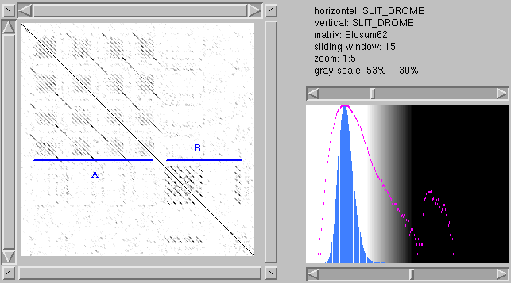
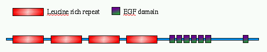

SLIT_DROME (P24014): MAAPSRTTLMPPPFRLQLRLLILPILLLLRHDAVHAEPYSGGFGSSAVSSGGLGSVGIHIPGGGVGVITEARCPRVCSCT GLNVDCSHRGLTSVPRKISADVERLELQGNNLTVIYETDFQRLTKLRMLQLTDNQIHTIERNSFQDLVSLERLDISNNVI TTVGRRVFKGAQSLRSLQLDNNQITCLDEHAFKGLVELEILTLNNNNLTSLPHNIFGGLGRLRALRLSDNPFACDCHLSW LSRFLRSATRLAPYTRCQSPSQLKGQNVADLHDQEFKCSGLTEHAPMECGAENSCPHPCRCADGIVDCREKSLTSVPVTL PDDTTDVRLEQNFITELPPKSFSSFRRLRRIDLSNNNISRIAHDALSGLKQLTTLVLYGNKIKDLPSGVFKGLGSLRLLL LNANEISCIRKDAFRDLHSLSLLSLYDNNIQSLANGTFDAMKSMKTVHLAKNPFICDCNLRWLADYLHKNPIETSGARCE SPKRMHRRRIESLREEKFKCSWGELRMKLSGECRMDSDCPAMCHCEGTTVDCTGRRLKEIPRDIPLHTTELLLNDNELGR ISSDGLFGRLPHLVKLELKRNQLTGIEPNAFEGASHIQELQLGENKIKEISNKMFLGLHQLKTLNLYDNQISCVMPGSFE HLNSLTSLNLASNPFNCNCHLAWFAECVRKKSLNGGAARCGAPSKVRDVQIKDLPHSEFKCSSENSEGCLGDGYCPPSCT CTGTVVACSRNQLKEIPRGIPAETSELYLESNEIEQIHYERIRHLRSLTRLDLSNNQITILSNYTFANLTKLSTLIISYN KLQCLQRHALSGLNNLRVVSLHGNRISMLPEGSFEDLKSLTHIALGSNPLYCDCGLKWFSDWIKLDYVEPGIARCAEPEQ MKDKLILSTPSSSFVCRGRVRNDILAKCNACFEQPCQNQAQCVALPQREYQCLCQPGYHGKHCEFMIDACYGNPCRNNAT CTVLEEGRFSCQCAPGYTGARCETNIDDCLGEIKCQNNATCIDGVESYKCECQPGFSGEFCDTKIQFCSPEFNPCANGAK CMDHFTHYSCDCQAGFHGTNCTDNIDDCQNHMCQNGGTCVDGINDYQCRCPDDYTGKYCEGHNMISMMYPQTSPCQNHEC KHGVCFQPNAQGSDYLCRCHPGYTGKWCEYLTSISFVHNNSFVELEPLRTRPEANVTIVFSSAEQNGILMYDGQDAHLAV ELFNGRIRVSYDVGNHPVSTMYSFEMVADGKYHAVELLAIKKNFTLRVDRGLARSIINEGSNDYLKLTTPMFLGGLPVDP AQQAYKNWQIRNLTSFKGCMKEVWINHKLVDFGNAQRQQKITPGCALLEGEQQEEEDDEQDFMDETPHIKEEPVDPCLEN KCRRGSRCVPNSNARDGYQCKCKHGQRGRYCDQGEGSTEPPTVTAASTCRKEQVREYYTENDCRSRQPLKYAKCVGGCGN QCCAAKIVRRRKVRMVCSNNRKYIKNLDIVRKCGCTKKCY